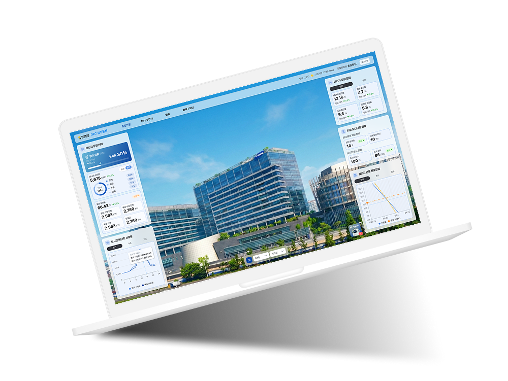
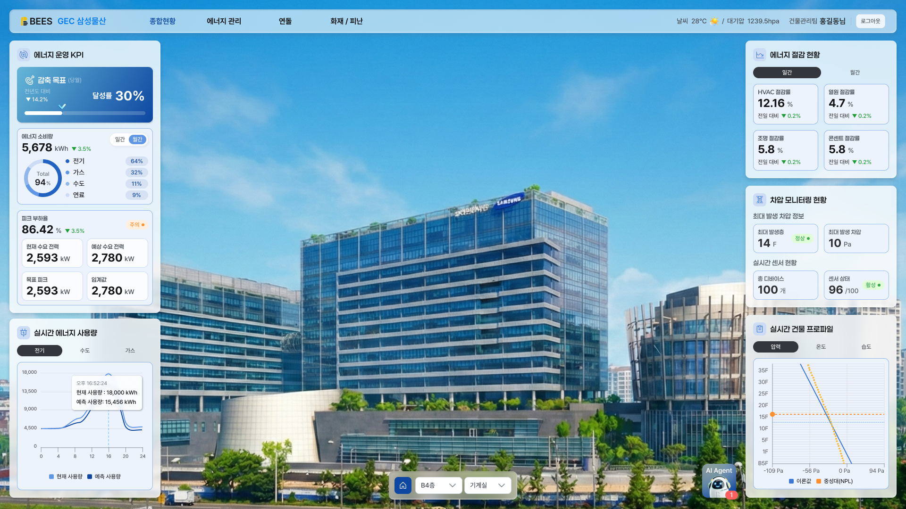
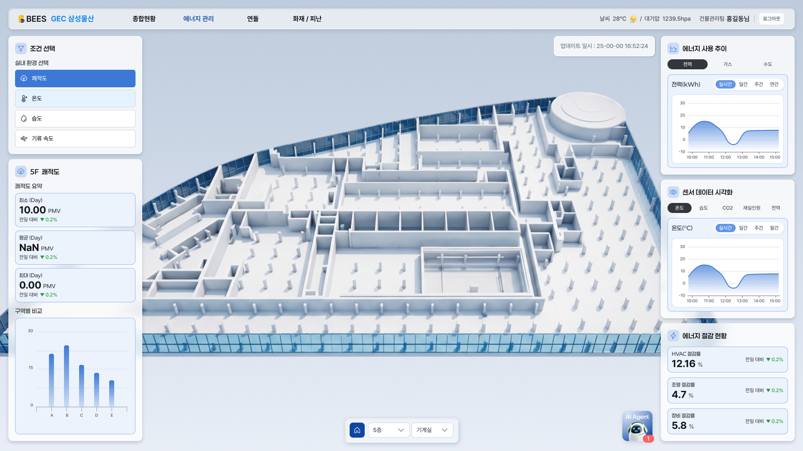
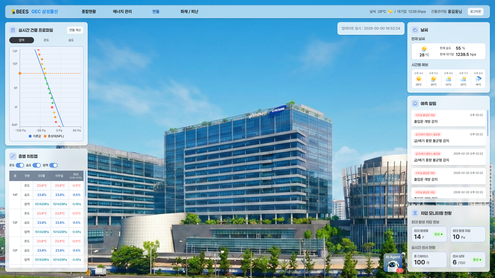
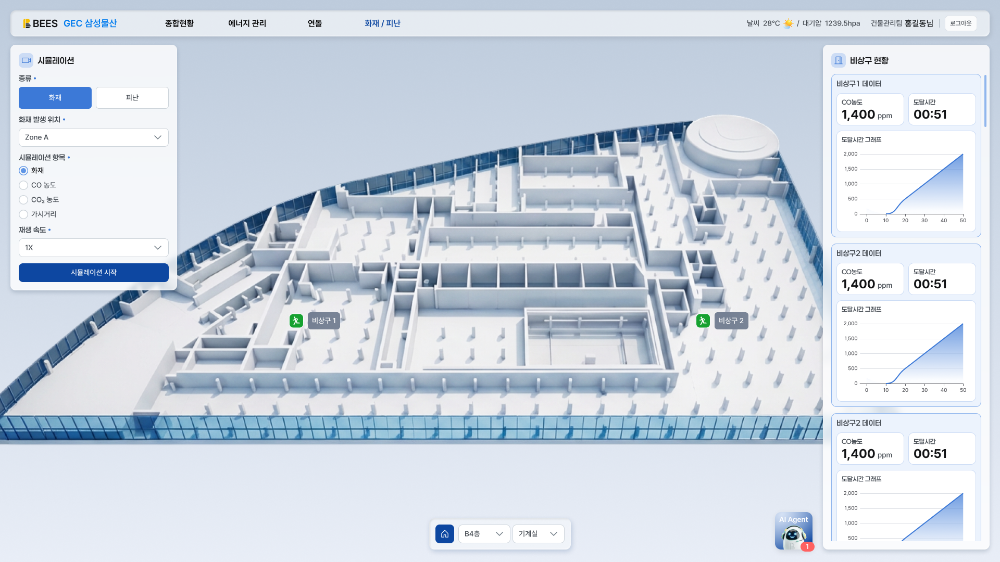
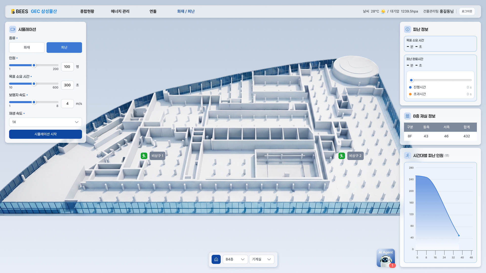
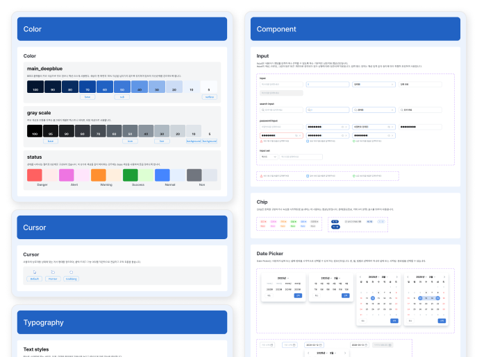
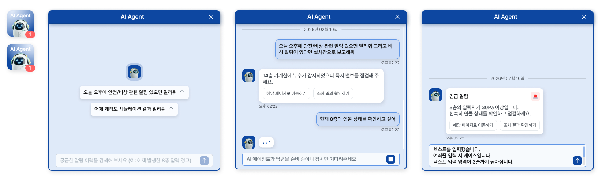
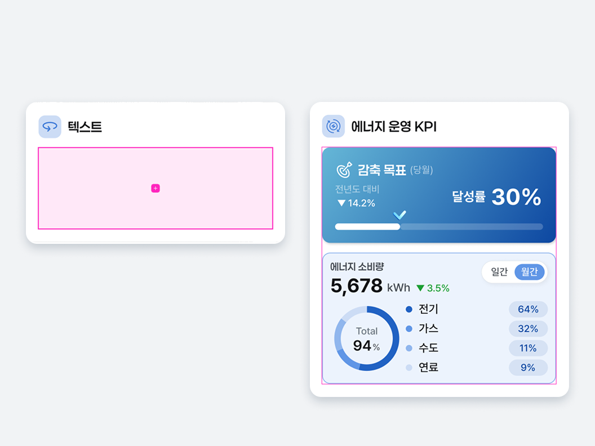
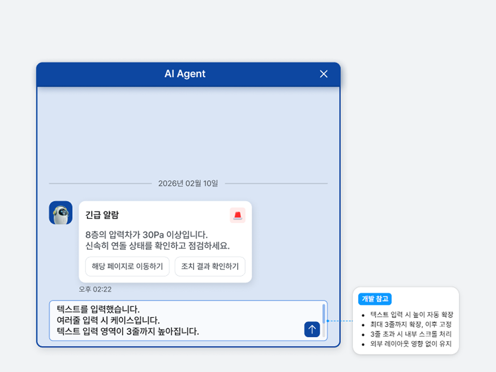

복잡한 정보를 나열하는 대신, 사용자의 흐름에 맞게 이해와 행동이 이어지도록 구성했습니다.
건물 → 층 → 설비로 이어지는 구조를 기반으로, 복잡한 데이터를 기능 중심이 아닌 공간 단위로 탐색할 수 있도록 구성
사용자가 상태를 확인한 이후, 화면을 이동하지 않고 바로 다음 행동으로 이어질 수 있도록 인터페이스를 설계
분산된 에너지 데이터를 통합·구조화해 핵심 지표를 직관적으로 파악할 수 있는 정보 체계를 설계했습니다.





분산된 UI 요소를 통합하고, 컴포넌트 기반 설계를 통해 일관성과 확장성을 확보했습니다.
컬러, 타이포그래피 등 기준을 표준화하여 화면 간 시각적 불균형을 제거하고 사용자 경험의 일관성을 유지
재사용 가능한 컴포넌트 구조를 정의하여 디자인 및 개발 생산성을 향상시키고 유지보수 비용 절감

현장의 설비 상태와 이상 신호를 대화형 인터페이스로 통합하여, 사용자가 별도의 시스템 탐색 없이 즉시 상황을 파악하고 대응할 수 있도록 설계했습니다. 실시간 데이터 스트림을 기반으로 위험 징후를 선제적으로 감지하고, 필요한 조치와 경로를 맥락적으로 제안함으로써 의사결정 속도를 구조적으로 단축했습니다.

실시간 알림과 대화형 인터페이스를 결합해, 복잡한 수치를 해석하지 않아도 현재 상황을 직관적으로 이해할 수 있도록 설계
알림 확인에서 끝나지 않고, 필요한 행동까지 한 흐름 안에서 이어지도록 설계해 사용자의 다음 행동을 고민하지 않게 설계

